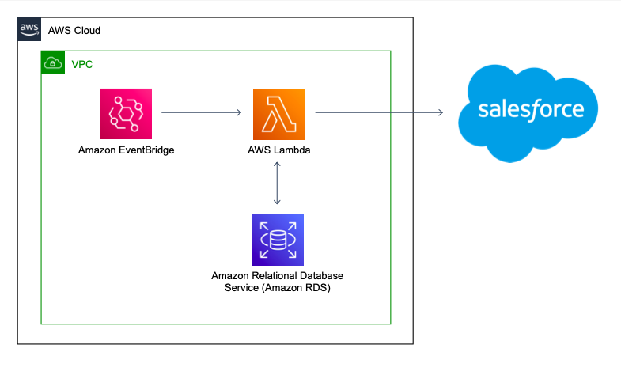

Automation of engagement system
Jan 2021 ~ OMRON Healthcare Europe
Length: 1mo (at 1.0 FTE)
Software: AWS (EventBridge, Lambda, RDS, VPC)
Programming languages:
- Python (PyMySQL, Pandas, boto3, datetime, logging)
- SQL
Data: Database design consisting of tables with feature names and types
Problem description:
With the release of the Hypertension Plus app, OMRON Healthcare wanted to raise the engagement among
users by keeping track of specific groups of patients, such as the ones who have not accessed
their account in the last week or the ones who have not completed their blood pressure
measurements, and targeting them with email reminders

Approach & Results:
Initially, the SQL queries that retrieve the desired groups of patients were written using
the information provided in the database design. Next, a Python script that connects to the
database, performs a query, and outputs the result in the demanded format was prepared.
The code was later transposed into an AWS Lambda function, connecting and retrieving
information from an Amazon RDS instance and uploading the answer to Salesforce. Lastly, the
Lambda functions were triggered by a particular Amazon EventBridge event, depending on the desired
frequency of the query. For instance, some are executed daily, while others are triggered
every Friday. Consequently, the system helps OMRON Healthcare save the time needed to
manually perform the repetitive queries and eliminates the afferent chance of human error.